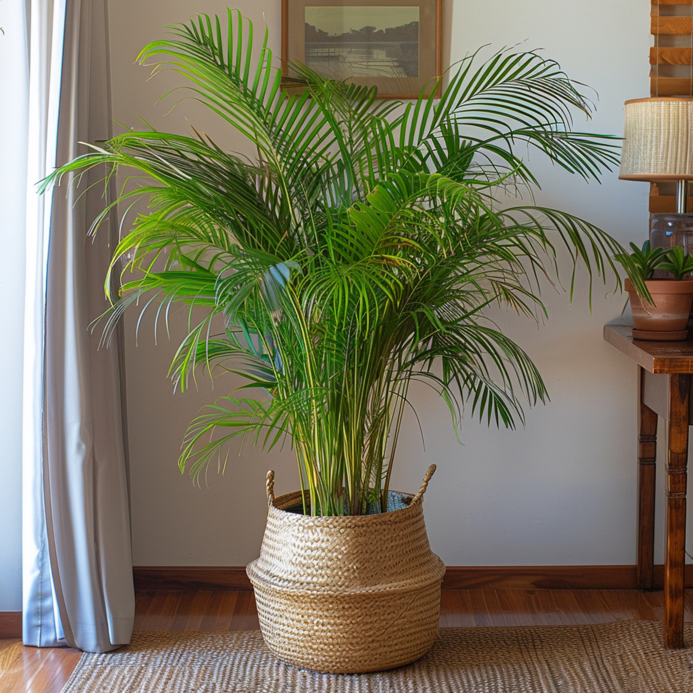
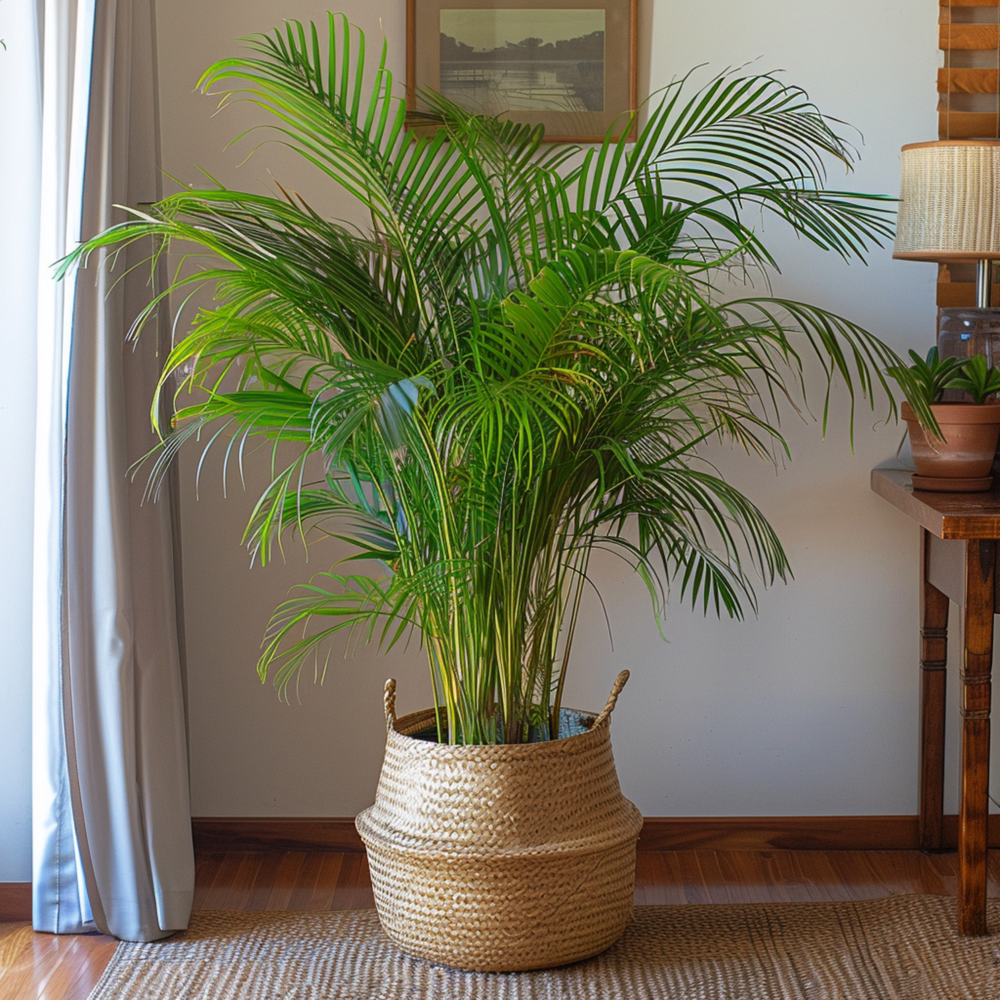

A Areca Palmeira é uma das plantas mais
eficazes na purificação do ar. Além
de
suas propriedades purificadoras, oferece
um toque tropical e refrescante a qualquer
ambiente.
Prefere ambientes bem iluminados
e requer regas moderadas
 
